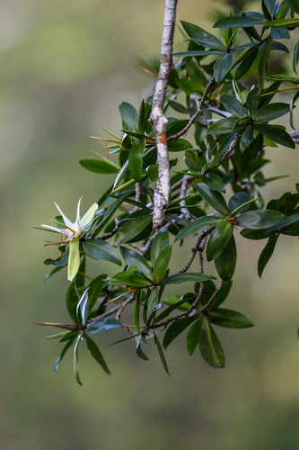

Tetrameristaceae
Tetramerista Family / Tea Mangrove Family
Tetrameristaceae is a small family in the order Ericales, comprising three genera (Tetramerista, Pentamerista, Pelliciera) and about 3-5 species of trees and shrubs. The family exhibits a remarkable disjunct distribution, with members found in Southeast Asia (Malesia), the Guiana Highlands of South America, and Neotropical mangrove swamps (Pelliciera).
Overview
The Tetrameristaceae family includes evergreen trees and shrubs notable for their scattered global distribution. Tetramerista is found in the peat swamp forests of Malesia, Pentamerista occurs in the unique upland environments of the Guiana Shield in South America, and Pelliciera is a mangrove species found along the Pacific (and occasionally Atlantic) coasts of Central and northern South America.
Pelliciera rhizophorae, the Tea Mangrove, is particularly interesting due to its specialized adaptations to saline, waterlogged environments, including pneumatophores (breathing roots) and vivipary (seeds germinating while still attached to the parent tree). The other genera inhabit freshwater swamp or forest environments.
Economically, the family is of minor importance. Pelliciera wood has been used locally for construction and fuel, and its bark is rich in tannins. Tetramerista wood is sometimes used but is not a major timber source. The family is primarily of botanical interest due to its phylogenetic position within the large order Ericales and its fragmented distribution pattern.
Quick Facts
- Scientific Name: Tetrameristaceae
- Common Name: Tetramerista Family, Tea Mangrove Family (no single widely used name)
- Number of Genera: 3 (Tetramerista, Pentamerista, Pelliciera)
- Number of Species: Approximately 3-5
- Distribution: Disjunct: SE Asia (Malesia), Guiana Highlands (S. America), Neotropics (Pacific/Atlantic coasts of Central/S. America - mangroves)
- Evolutionary Group: Eudicots - Asterids - Ericales
Key Characteristics
Growth Form and Habit
Members are evergreen trees or shrubs. Pelliciera is a mangrove tree, typically reaching 10-20 meters, often developing stilt roots near the base and distinctive knee-like or peg-like pneumatophores (breathing roots) that project above the mud. Tetramerista and Pentamerista are non-mangrove trees or shrubs found in freshwater swamp forests or upland forests.
Leaves
Leaves are simple, alternate, and often spirally arranged, sometimes appearing clustered towards the ends of branches. They are typically leathery (coriaceous) in texture with entire (smooth) margins. Stipules are usually absent or minute and quickly falling (caducous).
Flowers
Flowers are bisexual, radially symmetrical (actinomorphic), and relatively large and showy in some species (especially Pelliciera). They are typically borne solitary or in small few-flowered clusters (fascicles) in the axils of leaves.
- Calyx: Composed of 4 (Tetramerista) or 5 (Pentamerista, Pelliciera) distinct sepals, which are often persistent, remaining attached to the base of the fruit. Pelliciera also has 2 large bracteoles below the calyx that resemble sepals.
- Corolla: Composed of 4 or 5 distinct petals, often somewhat fleshy. White, pinkish, or yellowish.
- Androecium: Stamens number 4 (Tetramerista), 5 (Pentamerista), or are numerous (around 100 in Pelliciera). Filaments are often short.
- Gynoecium: A single superior ovary composed of 4-10 fused carpels, forming an equivalent number of chambers (locules). Each locule contains a single ovule. There is a single, often short style with a lobed stigma.
Fruits and Seeds
The fruit type varies: it is a berry in Tetramerista and Pentamerista, containing 1 to few seeds. In Pelliciera, the fruit is a large (up to 10 cm long), buoyant, somewhat fleshy, indehiscent, pointed capsule or drupe-like structure, crowned by the persistent sepals and style base. It typically contains only one large seed.
A notable feature of Pelliciera is vivipary, where the single seed germinates within the fruit while it is still attached to the parent tree, developing a robust hypocotyl before the fruit drops.
Field Identification
Identifying Tetrameristaceae requires considering habitat, growth form, and specific floral/fruit features, especially given the distinctiveness of the three genera:
Primary Identification Features
- Habitat: Mangrove swamp (Pelliciera), freshwater swamp forest (Tetramerista), or upland forest (Pentamerista).
- Growth Form: Trees or shrubs. Look for pneumatophores and stilt roots in mangrove settings (Pelliciera).
- Simple, Alternate, Leathery Leaves: Often clustered near branch tips.
- Bisexual, 4/5-merous Flowers: Solitary or in small axillary clusters. Superior ovary.
- Persistent Sepals: Often visible at the base of the fruit.
- Fruit Type: Berry (Tetramerista, Pentamerista) or large, pointed, buoyant capsule/drupe (Pelliciera).
- Viviparous Seedling (Pelliciera): Look for germinating seeds within fruits still on the tree or recently fallen pointed fruits with emerging hypocotyls in mangrove areas.
Secondary Identification Features
- Flower Color: White/pinkish/yellowish.
- Stamen Number: 4, 5, or numerous.
- Leaf Texture: Distinctly leathery.
- Geographic Location: Critical due to the disjunct distribution (SE Asia vs. Guiana Shield vs. Neotropical coasts).
Seasonal Identification Tips
- Flowering/Fruiting: Timing varies geographically and by species. Flowers can be showy. The large fruits of Pelliciera are conspicuous when present.
- Vegetative State: Leathery, alternate leaves clustered at branch tips are a year-round feature. Pneumatophores of Pelliciera are always present.
Common Confusion Points
- Pelliciera vs. Other Mangroves: Distinguished from Rhizophoraceae (e.g., Rhizophora) by its alternate leaves (vs. opposite), large solitary flowers with numerous stamens, and unique pointed fruit (vs. pencil-shaped propagules). Distinguished from Avicenniaceae/Acanthaceae (e.g. Avicennia) by alternate leaves (vs. opposite) and fruit type. Pneumatophore type is also distinctive (knee/peg-like vs. pencil-like in Avicennia).
- Tetramerista/Pentamerista vs. Other Forest Trees: Requires examination of flower structure (4/5-merous, superior ovary, specific stamen number) and fruit type (berry). Leaf clustering can be a helpful clue. Compare with families like Theaceae, Clusiaceae, or other Ericales members found in similar habitats.
Field Guide Quick Reference
Look For:
- Trees/shrubs (mangrove or forest)
- Alternate, simple, leathery leaves (often clustered)
- Bisexual, 4/5-merous flowers
- Superior ovary
- Persistent sepals
- Fruit: Berry OR large pointed capsule
- Pelliciera: Mangrove habitat, pneumatophores, vivipary
Key Variations (Genera):
- Tetramerista: SE Asia, 4-merous, 4 stamens, berry
- Pentamerista: Guiana Shield, 5-merous, 5 stamens, berry
- Pelliciera: Neotropics, 5-merous, many stamens, large capsule, mangrove
Notable Examples
The family includes only a few species, with one representative from each genus being notable:

Tetramerista glabra
(No common name)
A tree found in the peat swamp forests of Malesia (Malay Peninsula, Sumatra, Borneo). It has 4-merous flowers and produces a small berry. Its timber is sometimes known locally as "Punah".

Pentamerista neotropica
(No common name)
A shrub or small tree restricted to the Guiana Highlands region of South America (Venezuela, Guyana). It features 5-merous flowers with 5 stamens and berry fruits. Represents the South American non-mangrove element of the family.

Pelliciera rhizophorae
Tea Mangrove
A mangrove tree found along the Pacific coast (and rarely Atlantic) of Central and South America. Easily recognized by its large, solitary white/pinkish flowers, numerous stamens, distinctive pointed buoyant fruit, viviparous seedling, and knee/peg-like pneumatophores. It often forms dense stands in specific mangrove zones.
Phylogeny and Classification
Tetrameristaceae belongs to the large and diverse order Ericales, within the asterid clade of eudicots. This order includes families as varied as Ericaceae (heaths, blueberries), Primulaceae (primroses), Sapotaceae (sapodilla), Ebenaceae (ebony), and Lecythidaceae (Brazil nut). Tetrameristaceae's exact position within Ericales has been refined by molecular studies, often placing it near families like Marcgraviaceae and Balsaminaceae.
The inclusion of Pelliciera within Tetrameristaceae (as supported by APG IV) unites geographically disparate genera (SE Asia, S America, Neotropics) into one family. This disjunct distribution suggests an ancient origin and subsequent fragmentation, possibly related to continental drift or long-distance dispersal events followed by extinction in intermediate areas. The adaptation of Pelliciera to the mangrove habitat represents a significant ecological shift compared to its forest-dwelling relatives.
Position in Plant Phylogeny
- Kingdom: Plantae
- Clade: Angiosperms (Flowering plants)
- Clade: Eudicots
- Clade: Asterids
- Order: Ericales
- Family: Tetrameristaceae
Evolutionary Significance
Tetrameristaceae is significant for understanding plant evolution due to:
- Biogeography: Its highly disjunct distribution across different continents provides clues about historical connections, dispersal, and extinction patterns.
- Ecological Diversification: The presence of both mangrove (Pelliciera) and non-mangrove forest genera within a small family illustrates adaptation to vastly different environments.
- Phylogenetic Link: Its position within the diverse Ericales helps connect different evolutionary lineages within this major asterid order.
- Morphological Features: The combination of features like simple leaves, 4/5-merous flowers, superior ovary, and specific fruit types helps define its lineage within the order. The specialized mangrove adaptations of Pelliciera (pneumatophores, vivipary) are notable evolutionary innovations.